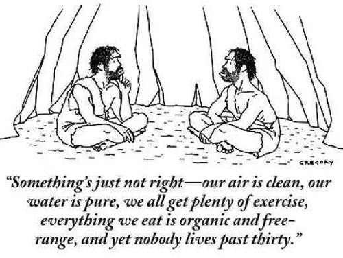
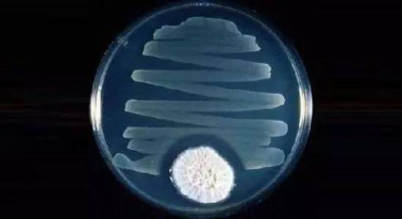

你好，欢迎来到《医学通识50讲》，我是薄世宁。
先请你看下面这幅漫画。
漫画里，两个远古人坐在山洞里讨论人生。他俩说：
“有个事儿好像不大对劲。”
“有啥不对劲儿呢？”
“咱们的空气是干净的，咱们喝的水是纯净水，咱们锻炼也足够，咱们的食物都是有机和野生的。为啥却没人能活过30岁呢？”

你想过这个问题没有呢？
为什么远古人活得这么“绿色”，却活不过30岁？
咱们和雾霾斗，和压力斗，和农药斗，但是咱们的平均预期寿命已经接近80岁了。
让我说，今天人类的寿命大大延长，其中一项重要的原因，就是巧妙地利用了物种竞争。
这节课请你记住这四个字——物种竞争。
利用物种竞争治疗感染
从古至今，咱们一直笼罩在致病微生物的威胁之下。
在古代，甚至不经意划破皮都有可能要了命。致病微生物想侵入人体获取营养，这就是物种之间的竞争。
更严重的是烈性传染病，比如鼠疫。
鼠疫也叫黑死病。引起鼠疫的就是一种毒力和传染性都很强的细菌——鼠疫杆菌。
1347年欧洲爆发鼠疫，夺走了2500万人的生命，占到当时欧洲总人口的1/3。在意大利的佛罗伦萨，80%的人在这场鼠疫中丧命。
有作家曾经写到：
很多人上午刚把亲人的尸体拉去焚烧，到了晚上，自己的尸体又要被别人拖走烧掉，就这么惨。
这次鼠疫过后，欧洲人口用了大约150年才恢复。
鼠疫和很多细菌感染性疾病，比如肺结核、淋病、细菌性肺炎等，这些病告诉咱们：很多毒力很强的细菌，单纯依靠人体免疫，对抗不了。
这种状况一直持续到一个药的发现——青霉素。
关于青霉素，你肯定了解不少。
比如，1928年英国的弗莱明博士（Alexander Fleming）在实验室发霉的培养基中，偶然发现了青霉素。
再比如，弗洛里（Howard Walter Florey）和钱恩（Ernst Chain）完成了青霉素的提纯，并促成了青霉素的量产。
青霉素的发明，让这三位科学家分享1945年的诺贝尔生理学或医学奖。
还有，盟军诺曼底登陆，不仅准备了无数的枪支弹药，还准备了10万支青霉素。二战中青霉素挽救了无数伤员。
那么，一支小小的青霉素，为什么可以救这么多命呢？
研究表明，以青霉素为代表的β-内酰胺类抗生素，作用机制就是干扰了细菌细胞壁的合成。
我们熟悉的头孢，就是β-内酰胺类抗生素。
要知道，咱们人体的细胞是没有细胞壁的，所以青霉素杀细菌效果好，同时对人体细胞伤害很小。这是药理学家的解释。
我再带你再深想一层。
再回到90多年前，弗莱明博士偶然发现青霉素的现场，这里面有个细节。弗莱明发现，在长了霉菌的培养基周围，没有细菌生长。

为什么真菌周围不长细菌呢？一定是真菌分泌的什么东西，抑制或者杀死了细菌。
为什么真菌要和细菌过不去呢？
对，这又是另一种物种竞争关系。
咱们人体内，不仅有细菌，还有真菌。在数以百万年的演化过程中，人、细菌、真菌形成了一种既相互依存，又相互竞争的关系。
平时大家和谐共处，这是共生，但是在抵抗力低，或者人体某个部位有了破损，或者遇到毒力强的致病微生物侵入人体的时候，三者就成了你死我活的竞争关系。
既然在严重感染的状态下，人体的免疫力很难清除细菌。那么，用真菌分泌的物质，也就是青霉素，就可以杀死细菌。
人体是真菌生存的环境，所以，这种真菌分泌的物质，一定不能对人有太大伤害，否则一起玩完谁也得不到好处。因此，青霉素对细菌杀伤效果好，但是对人的伤害却很小。
青霉素就是第一个抗生素。
“抗生”的意思，就是一种微生物对另外一种微生物的生长繁殖有抑制或者杀灭作用。一种微生物分泌的，可以抑制或者杀死对方的物质，就是抗生素。
所以，用青霉素治疗细菌感染，就是用真菌分泌的物质去杀死细菌，这是巧妙地利用了物种之间天然的竞争关系。
这就是青霉素的工作原理，是理解的物种竞争关系的第一个层面：利用物种竞争治疗感染。
过度使用抗生素带来的问题
青霉素的出现带来了一个抗生素时代。
人类又研发或者合成了其他种类的抗生素，作用原理也不再只是干扰细胞壁的合成。比如，有的是影响细菌蛋白的合成，有的是阻碍细菌DNA的合成。
抗生素的出现，给人类对抗细菌提供了一把利器。
以前很多治不了的病，今天能治了。比如细菌性肺炎、细菌性尿路感染等等。
那么，人类有了抗生素，是不是就“无敌”了呢？
我们今天担心的所谓抗生素的耐药，以及二重感染等问题，从抗生素发现的那一天，就埋下了种子。
在细菌感染的时候，用抗生素是为了治病，为了救命。
不容忽视的是，抗生素是把物种天然的竞争关系，人为拿出来利用。
长期使用的话，对抗生素敏感的细菌就杀光了，这时候，另一些不敏感的细菌就会过度繁殖，细菌也会演化出适应抗生素环境的生存方式。这就是耐药。
这部分细菌会把耐药的遗传物质，通过接触传递给周围的细菌，也通过繁殖传递给它的后代。
人类研发一种新型抗生素，要用数年甚至十几年。但是，细菌只需几个小时就能完成一次进化和迭代。
所以，再强、再新的抗生素，也不可能杀光所有的细菌。杀不掉的细菌终将耐药。这就是细菌对抗生素的耐药现象。
除了耐药问题，大量应用抗生素，还会打破肠道内细菌的内共生关系。关于内共生，在前面的课程《第10讲 内共生：认知疾病的新角度》里讲过，这里就不多说了。
打破内共生就会引起菌群紊乱。我举个极端的例子。
在医院，因为严重感染性疾病，需要大量使用抗生素的病人，会出现顽固的腹泻。就是因为抗生素打破了原本的菌群平衡，导致菌群紊乱。
这种腹泻很难治，那怎么办呢？
既然是抗生素破坏了物种的平衡，那最好的办法就是恢复平衡。
有一种办法，就是把健康人的粪便提取液，也就是健康人的肠道细菌，打到病人的肠道里，很多病人的腹泻就能止住。
大量广谱抗生素应用，还会带来真菌感染。
为什么呢？
我们利用物种竞争，利用真菌分泌的物质杀死了细菌，谁最高兴呢？
当然是真菌了。
真菌过度生长，也会带来真菌感染。大量使用广谱抗生素的病人就会出现深部真菌感染，这类感染就更难治了。
我再举个日常生活中的例子。
很多女生受到广告误导，动不动就用含有杀菌剂的洗液冲洗阴道。阴道本身就是一个充满细菌的环境，用洗液就破坏了阴道本身的菌群平衡，反而会引起真菌感染。
很多阴道炎，尤其是真菌性阴道炎都与阴道的微生态失调有关。
这是关于物种竞争的第二个层面：过度利用抗生素，会带来细菌耐药、菌群紊乱，继发真菌感染。
科学使用抗生素的三条建议
到底该不该用抗生素呢？有了感染，“死扛着”是不是就更安全呢？
这种态度肯定不对。作为医生，我给你三条使用抗生素的建议：
第一，在医生的指导下规范应用，抗生素是好药，不会带来多大的副作用。
所以，在严重感染的时候一定要用抗生素，不要排斥。而且要早用，按疗程用。
第二，任何感染都不能单纯地“杀”，除了应用抗生素之外，应该鼓励人体的自我防御。
我在前面课程里讲过，比如发烧、咳嗽、腹泻，这些都是人体清除细菌的自我防御机制，如果不是过度反应，尽量不要压制。
比如，把痰咳出来，就是身体的一种自我防御。很多病情严重的病人没办法自主咳痰，这样就很危险。
所以在医院，对于严重的肺炎病人，医生和护士时刻都在鼓励病人咳痰。咳不出来的，医生还会用气管镜吸痰，这些都是在激励人体本来的自我防御机制。
危重病人能否战胜疾病的一个重要指标，就是看他是否恢复了有效的咳痰能力。
第三，少备抗生素。
家里的小药箱，可以备退烧药、感冒药、平时吃的慢性病用药，但是我认为不要准备太多的抗生素。
别自己滥用抗生素。关于抗生素用不用，怎么用，还是应该咨询医生，根据处方购买和治疗。
下节预告
任何治疗的前提，都要保证人活着。下一讲，我们讲讲热修复的新起点——呼吸机。